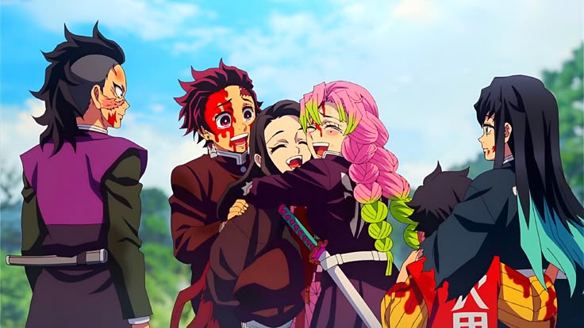
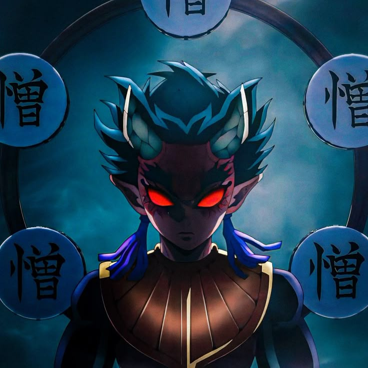

У четвертому сезоні Танджіро вирушає до таємничої Деревні ковалів мечів, щоб відремонтувати свій зламаний меч. Це місце приховане від усього світу, адже саме тут створюються клинки для винищувачів демонів. Проте навіть у цьому тихому куточку небезпека не змушує себе чекати — вороги вже на підході.
У деревню проникають два демони вищого рангу — Хантенґу та Ґьоко, які влаштовують жорстоку атаку. Танджіро разом із Міцурі Канроджі (Хашира любові) та Муїчіро Токіто (Хашира туману) змушені протистояти новим потужним ворогам. Бої в цьому сезоні стають ще видовищнішими, а емоційне напруження — глибшим, особливо коли кожен герой розкриває свою історію і внутрішню боротьбу.
Сезон «Деревня ковалів мечів» — це історія про силу, що загартовується, як сталь: через біль, втрати й наполегливість. Глядачі бачать, як Танджіро стає ще сильнішим, а інші герої — глибшими і ближчими. Цей сезон підкреслює, що справжня міць народжується не лише в битві, а й у рішенні ніколи не здаватися.
